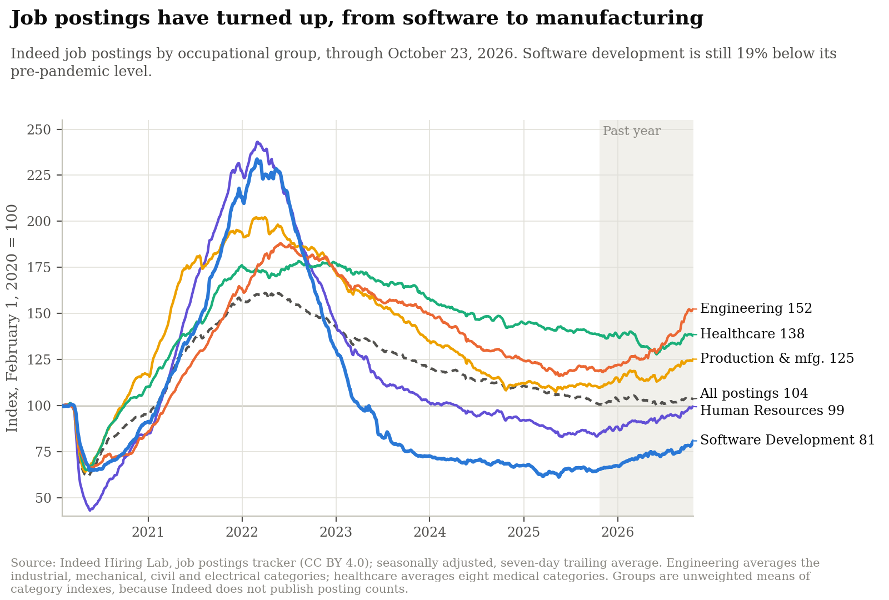
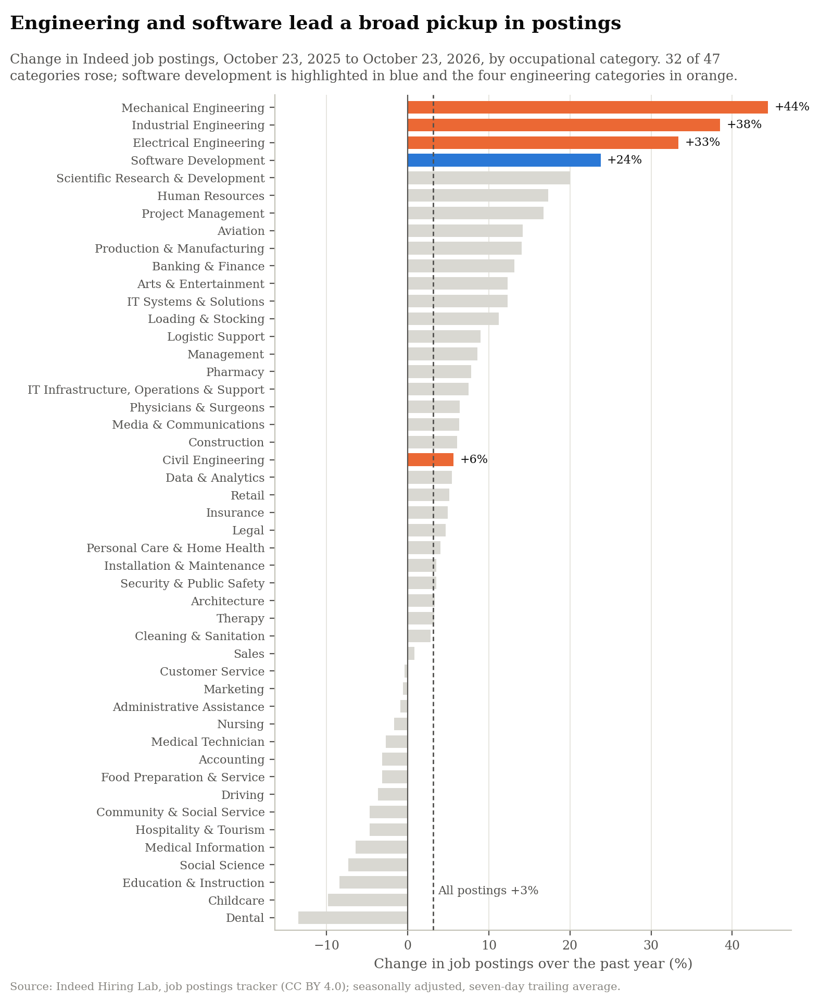
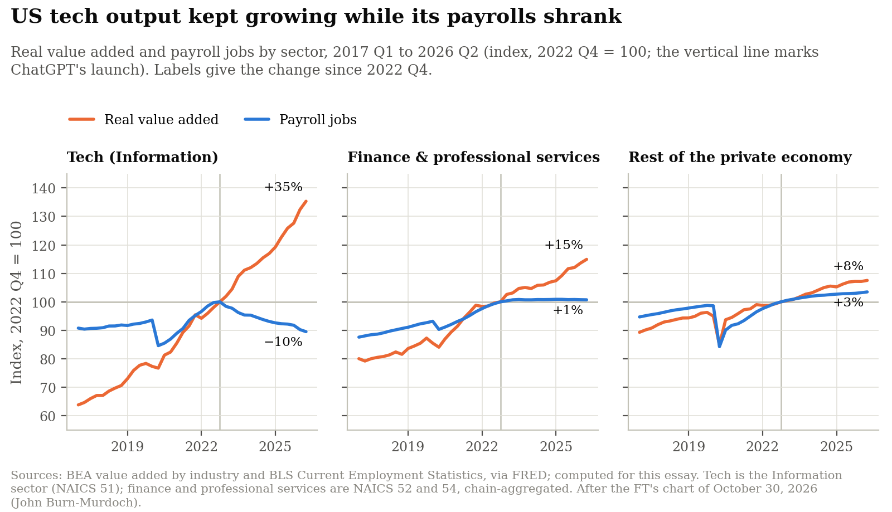
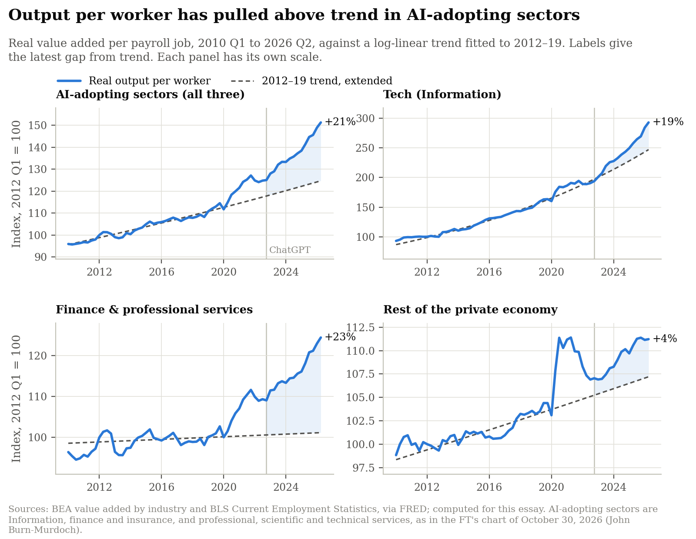
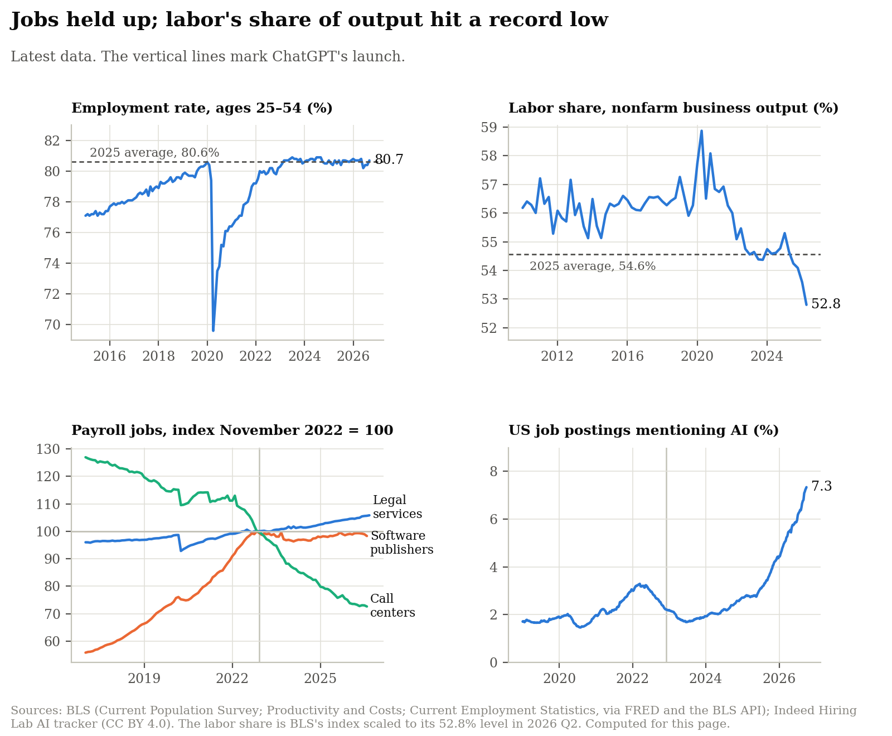

Data through October 23, 2026 for job postings, September 2026 for employment and pay, and 2026 Q2 for output and the labor share.
- Hiring has turned up from a deep low. Software development postings are up 24% over the past year but still 19% below February 2020. Engineering postings are up 28%, and 32 of 47 occupational categories rose. Customer service, administrative, marketing and accounting postings, the office work most exposed to language models, did not.
- The software rebound is American, and it tracks tax law. US software postings have risen 25% since the One Big Beautiful Bill Act restored the immediate deduction of software development costs on July 4, 2025. In five other rich countries they rose 4% at most, or fell.
- US tech produces more with fewer people. Since the end of 2022, real output in the Information sector is up 35% and its payroll jobs are down 10%.
- Output per worker is well above trend in AI-adopting sectors. In tech, finance and professional services it is 21% above its 2012–19 trend; in the rest of the private economy, 4%.
- Jobs are holding; labor's share is not. The prime-age employment rate (80.7%) is level with 2025. Labor's share of nonfarm business output fell to 52.8%, the lowest since 1947, and production workers' real pay fell 0.3% over the past year as inflation rose to 3.6%.
- None of this isolates AI. Interest-rate rises in 2022 and two US tax changes fit the same timing, and the FT finds no productivity break outside the US.
1. Job postings

Fig. 1 — Source: Indeed Hiring Lab, seasonally adjusted; computed for this page.
Software postings are 32% above their May 2025 low but 65% below their February 2022 peak; all postings are 36% below theirs. Human resources is back to its pre-pandemic level (+17% over the year); healthcare is flat. The same data reproduce a16z's figures exactly: engineering +29.5%, software +25.7% and manufacturing +13.3% since October 1, 2025.

Fig. 2 — Source: Indeed Hiring Lab; computed for this page.
- Mechanical (+44%), industrial (+38%) and electrical (+33%) engineering lead, consistent with building data centers, power and factories; civil engineering rose only 6%. The median category rose 5%.
- Customer service (−0.4%), administrative assistance (−0.9%), marketing (−0.6%) and accounting (−3.1%), all rated highly exposed to language models (Eloundou et al.), were flat or down. Software development, also highly exposed, rose 24%.
Tax law. The Tax Cuts and Jobs Act of 2017 required firms, from January 2022, to deduct the cost of software development over five years (fifteen for work abroad) instead of at once; US software postings peaked at the end of February. The One Big Beautiful Bill Act, signed on July 4, 2025, restored immediate deduction for domestic research from 2025, and back to 2022 for small businesses. Both laws were signed by President Trump, the first in his first term and the second in his second, so the 2025 rebound can be read as one law undoing the other's drag rather than as a verdict on AI.
Other countries, where neither law applies to local firms, separate the two years:
- Since July 4, 2025: software postings rose 25% in the US and 4% in Britain, and fell in Canada (−3%), Australia (−8%), Germany (−18%) and France (−13%). A US-only rebound fits the tax change; it also fits the concentration of AI investment in American firms.
- During 2022: they fell about as much in Canada (−39%) as in the US (−38%), and by 21–23% in Britain and Australia, where interest rates also rose. The tax change may have deepened the US slump but does not explain it. (US firms' research in Canada faced the fifteen-year rule, so Canada is an imperfect control.)
2. Output and jobs by sector

Fig. 3 — Sources: BEA and BLS via FRED; computed for this page, after the FT.
- Since 2022 Q4: tech output +35%, jobs −10%; finance and professional services output +15%, jobs +1%; rest of the private economy output +8%, jobs +3%.
- Timing: Information-sector payrolls peaked in November 2022, as interest rates rose and the 2022 tax rule raised the cost of software development; Big Tech's lay-offs came "long before production-ready AI" (FT).
- Software services: computer systems design employment is 5% below its March 2023 peak and down 1% over the past year.
3. Output per worker

Fig. 4 — Sources: BEA and BLS via FRED; computed for this page, after the FT.
- AI-adopting sectors (tech, finance, professional services): 21% above the 2012–19 trend, or between 16% and 23% depending on the years the trend is fitted to.
- Tech: on trend at the end of 2022 (−1.7%), now 19% above it. Output per worker has grown 12.5% a year since, against 6.5% a year in 2012–19.
- Finance and professional services: 23% above a nearly flat trend (0.3% a year in 2012–19), and already 8% above it in 2022. Growth since then, 3.8% a year, came from more output with the same staff, not from job cuts.
- Rest of the private economy: 4% above trend, mostly a 2020 composition effect as low-paid jobs disappeared.
4. Jobs, pay and the labor share

Fig. 5 — Sources: BLS via FRED and the BLS API; Indeed Hiring Lab; computed for this page.
- Employment: the employment rate of 25–54-year-olds is 80.7% (September), level with its 2025 average of 80.6%. For 20–24-year-olds it is 65.7% this year, against 65.4% in 2025 and 67.3% in 2019; their unemployment rate is 7.2%, down from 8.3% in 2025.
- Labor share: 52.8% of nonfarm business output in 2026 Q2, the lowest since records began in 1947 and 1.8 points below the 2025 average, while output per hour rose 2.2% over four quarters.
- Pay: production workers' real hourly pay fell 0.3% over the year to September: pay rose 3.3%, prices 3.6%. It has been below its year-earlier level since May, for the first time since January 2023. Real disposable income per person rose 0.7%.
- The most exposed industries: since November 2022, jobs rose 5.8% in legal services and fell 1.7% at software publishers and 27.4% in call centers. Call-center jobs had already fallen 21% between January 2017 and November 2022.
- AI in job ads: 7.3% of US postings mention AI, up from 3.7% a year earlier and 2.2% when ChatGPT launched.
5. Evidence not rebuilt here
- Other countries: output per worker in the AI-adopting sectors of the UK, Canada, Australia, the EU, France, Germany and Sweden shows little or no break from trend (FT).
- Companies: revenue and headcount diverged after 2022 at Alphabet, Meta, Microsoft and Spotify, but not at Bank of America, Visa, Accenture or Deloitte (FT).
- Young workers: in US payroll data, employment of 22–25-year-olds in the most AI-exposed jobs is 19% below the path of less-exposed peers, up from 15% a year earlier (Brynjolfsson, Chandar and Chen, June 2026); Current Population Survey data give 14.5% (July–September 2026). The FT finds the junior shortfall in software jobs in the US, UK, Canada and Western Europe, but in other exposed jobs mainly in the US.
Definitions, sources and limits: Methods and Data.
Comments